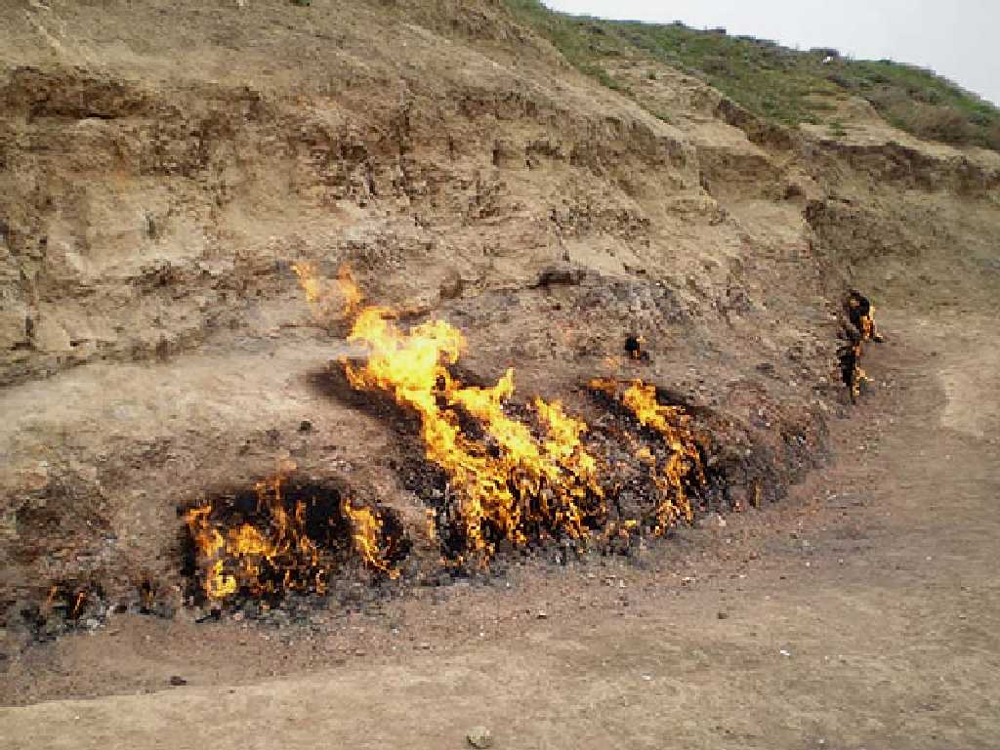
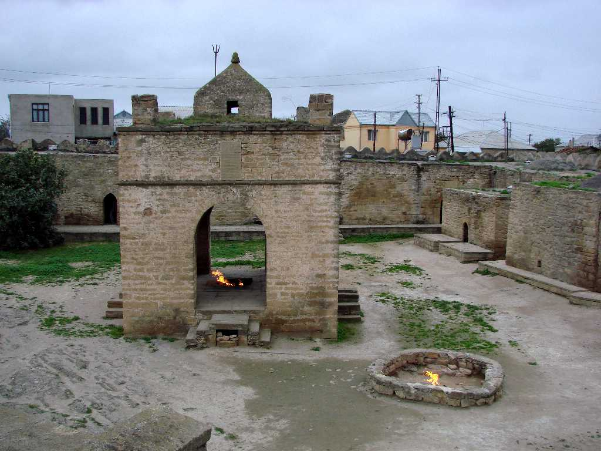

Yanan Dagh Baku
天然ガスが地表から吹き出ている石油とガスの大生産地 バクーの石油は紀元前から採取され都市が栄えていたイランやイラクに運ばれ灯火用 建物船のモルタル ミイラ等に用いられていた １９世紀半ばにはノーベル兄弟が石油会社を設立する等輸出が盛んになりスエズ運河開通後は世界中に輸出されるようになった

Atashgah Hindu Fire Temple
インド北部から拝火教が伝わり天然ガスが湧き出るバクーに寺院が創られイランやトルコへの中継基地となって栄えた